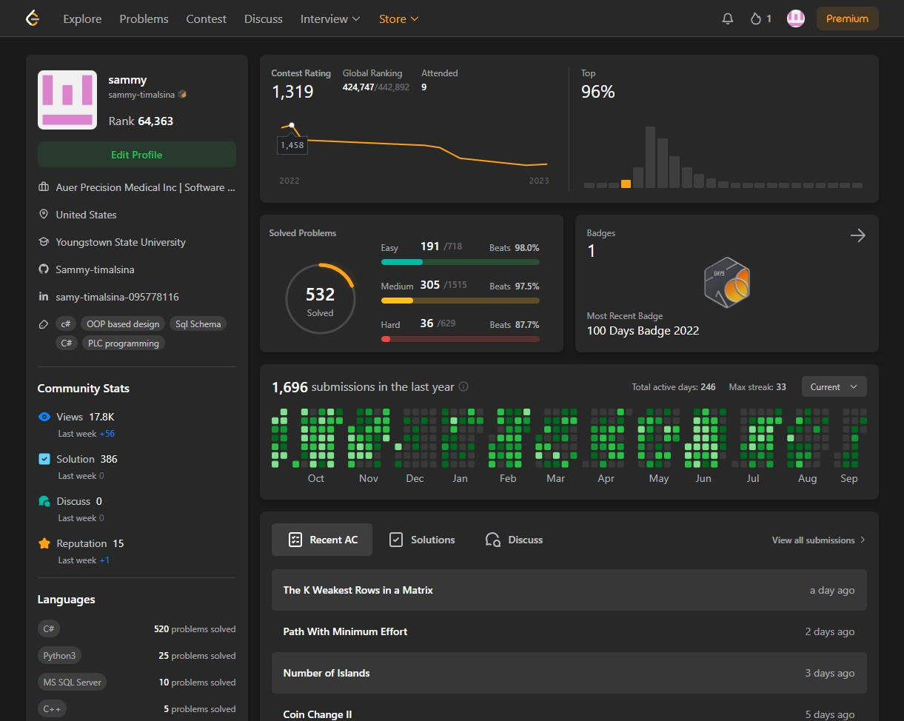

I am a dedicated software developer with a strong interest in learning, problem-solving, and advancing technological solutions. My expertise spans various design patterns, programming languages, web technologies, and vision programming.
Design Patterns: SOLID, Repository, Observer, Proxy, Composite, Adapter, Dependency Injection, MVC, MVVM
Languages: C#, C/C++, Python, PLC 61131-3, JavaScript
Web Technologies: HTML, CSS, jQuery
Web Services: REST API, Node.js, Express
Databases: MongoDB, Microsoft SQL, Cosmos DB
Vision Programming: Cognex, Keyence, Omron
Software Development Life Cycle: Waterfall, Scrum, Agile
I am also passionate about solving algorithmic challenges on platforms like LeetCode, where I enjoy the puzzle-solving aspect that provides a similar thrill to playing video games.

I developed the control system for an automatic tapping machine designed to tap bomb fuses.
This project involved creating a PLC program following IEC-61131-3 standards, as well as designing a vision flow chart on the Keyence XG-X1000 to inspect each tap for defects.
I also developed an HMI for user interface and control. The system achieves a 20-second cycle time, supporting high-volume production by managing the vibratory feeder, motor, spindle, and other key components.
Designed and developed a software application from scratch using C# and .NET Windows Forms.
The application utilizes the Omron SDK .NET library to capture images from an Omron camera and communicates with a UR robot to classify stamped barcodes as good, bad, or duplicate.
Built an image classification pipeline model to differentiate between various types of rods for sorting purposes.
Developed an ASP.NET MVC web application with a Bootstrap and jQuery front-end, and a C# back-end using the MVC framework and Repository pattern.
Integrated Azure Blob Storage to store CMM-generated reports and created a REST service in ASP.NET MVC, hosted on Azure App Service.
Developed an ASP.NET Razor Pages application to track project hours.
The front-end utilized jQuery, HTML, CSS, and Bootstrap, while the back-end was powered by C#, ASP.NET, and an Azure SQL Database.
Developed a Windows service in C# to act as middleware between the programmable logic controller (PLC) and the laser marker unit.
This service automated the operator's GUI interface with the OEM software, reducing the risk of selecting the wrong laser controller device on the network.
Developed a REST API in C# using the ASP.NET Core MVC framework with the Repository pattern.
This API was designed to collect data from ten automated production lines. The service was hosted on Azure Cloud, with each automation line securely authenticated via Azure Active Directory.
In my first project at Auer Precision, I developed a solution to automate the manual welding of a part. This involved designing a control system using a Keyence vision camera to verify the correct alignment of Part A and Part B before allowing the operator to proceed with welding.
I programmed the PLC using structured text (C++), configured the vision system, and created the electrical schematic and design for the setup.